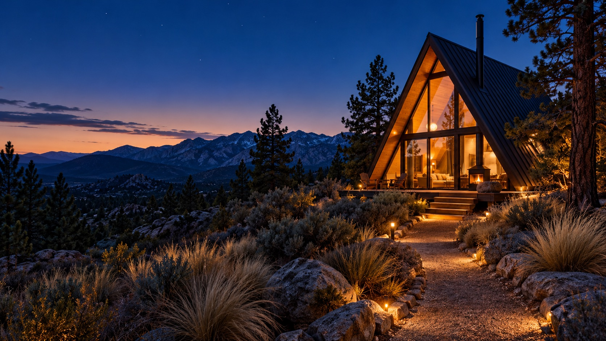

First light
Coffee on the deck while the desert wakes up.

Cabin nights, slow mornings, and a sky big enough to get lost in.
Find your cabin ↓Each cabin has a wood stove, a small deck, and a view that makes you forget to check your phone.
See the cabin details ↗Coffee on the deck while the desert wakes up.
A trail starts just beyond the little gate.
One more log. One more constellation.